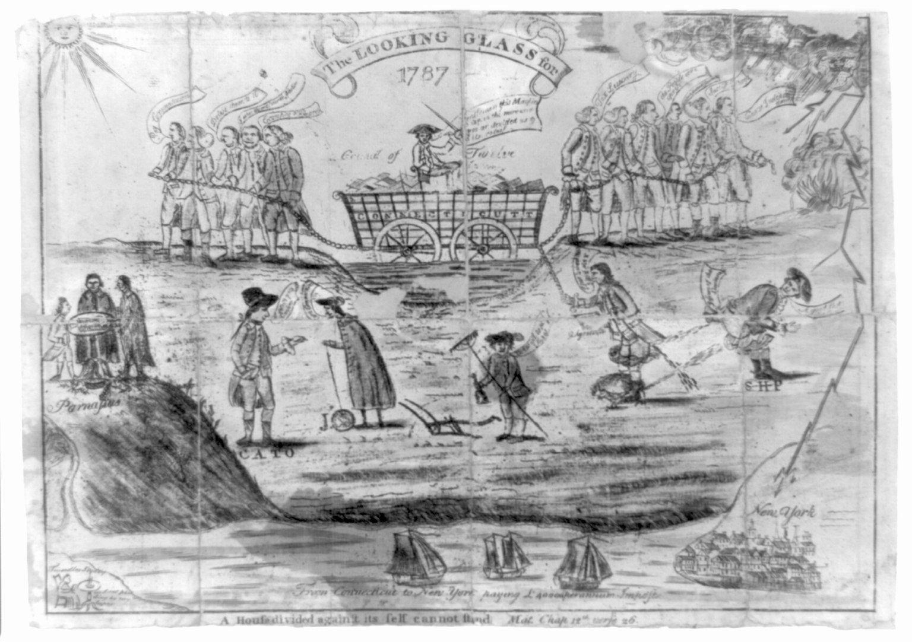

Directions: Work through the five stations in order. Each station holds one record of the contest of 1787 and 1788: Madison on faction, Brutus on size and power, Madison on the design itself, a Connecticut cartoon of the divided argument, and the amendments that closed the contest. At each station, state the fear the record answers or the fear it raises. At the end, judge who won the argument, the Federalists who got their Constitution or the Anti-Federalists who got its first ten amendments.
Source: James Madison, Federalist No. 10, 1787 (Congress.gov; spelling modernized), as carried in the audited TPSP record. Cuts are marked with ellipses, as the record carries them.
"Among the numerous advantages promised by a well-constructed Union, none deserves to be more accurately developed than its tendency to break and control the violence of faction."
"By a faction, I understand a number of citizens, whether amounting to a majority or a minority of the whole, who are united and actuated by some common impulse of passion, or of interest, adverse to the rights of other citizens, or to the permanent and aggregate interests of the community. There are two methods of curing the mischiefs of faction: the one, by removing its causes; the other, by controlling its effects."
"Extend the sphere, and you take in a greater variety of parties and interests; you make it less probable that a majority of the whole will have a common motive to invade the rights of other citizens; or if such a common motive exists, it will be more difficult for all who feel it to discover their own strength, and to act in unison with each other."
State Madison's definition of a faction in his own terms, and name the two methods of curing its mischiefs that he sets side by side.
Madison chooses the second method. Explain, from the third passage, how extending the sphere controls the effects of faction, naming both things extension makes harder for a majority.
Source: Brutus (attributed to Robert Yates), Brutus No. 1, 1787 (Constitution.org), as carried in the audited TPSP record. Spelling is as the edition carries it, including controul. Cuts are marked with ellipses, as the record carries them.
"The first question that presents itself on the subject is, whether a confederated government be the best for the United States or not? Or in other words, whether the thirteen United States should be reduced to one great republic, governed by one legislature, and under the direction of one executive and judicial; or whether they should continue thirteen confederated republics, under the direction and controul of a supreme federal head for certain defined national purposes only?"
"This government is to possess absolute and uncontroulable power, legislative, executive and judicial, with respect to every object to which it extends, for by the last clause of section 8th, article 1st, it is declared "that the Congress shall have power to make all laws which shall be necessary and proper for carrying into execution the foregoing powers, and all other powers vested by this constitution, in the government of the United States; or in any department or office thereof." And by the 6th article, it is declared "that this constitution, and the laws of the United States, which shall be made in pursuance thereof, and the treaties made, or which shall be made, under the authority of the United States, shall be the supreme law of the land; and the judges in every state shall be bound thereby, any thing in the constitution, or law of any state to the contrary notwithstanding."
"The territory of the United States is of vast extent; it now contains near three millions of souls, and is capable of containing much more than ten times that number. Is it practicable for a country, so large and so numerous as they will soon become, to elect a representation, that will speak their sentiments, without their becoming so numerous as to be incapable of transacting public business? It certainly is not."
"In a republic, the manners, sentiments, and interests of the people should be similar. If this be not the case, there will be a constant clashing of opinions; and the representatives of one part will be continually striving against those of the other. This will retard the operations of government, and prevent such conclusions as will promote the public good. [...] The United States includes a variety of climates. The productions of the different parts of the union are very variant, and their interests, of consequence, diverse. Their manners and habits differ as much as their climates and productions; and their sentiments are by no means coincident."
"These are some of the reasons by which it appears, that a free republic cannot long subsist over a country of the great extent of these states. If then this new constitution is calculated to consolidate the thirteen states into one, as it evidently is, it ought not to be adopted."
Brutus opens by framing a choice between two forms of union. State both forms in his words, and state which one he says the Constitution actually creates.
Name the two clauses Brutus quotes against the Constitution, and explain what work each clause does in his argument about consolidation. Then state his size argument in one sentence, using his own test for a republic.
Source: James Madison (attributed), Federalist No. 51, 1788 (Congress.gov), as carried in the audited TPSP record. Cuts are marked with ellipses, as the record carries them.
"Ambition must be made to counteract ambition. The interest of the man must be connected with the constitutional rights of the place."
"If men were angels, no government would be necessary. If angels were to govern men, neither external nor internal controls on government would be necessary. In framing a government which is to be administered by men over men, the great difficulty lies in this: you must first enable the government to control the governed; and in the next place oblige it to control itself."
"In the compound republic of America, the power surrendered by the people is first divided between two distinct governments, and then the portion allotted to each subdivided among distinct and separate departments. Hence a double security arises to the rights of the people. The different governments will control each other, at the same time that each will be controlled by itself."
State the great difficulty of framing a government of men over men, in Madison's words, and name the two tasks a frame must perform in his order.
Madison calls the American system a compound republic. State the two divisions of power he describes, and name the result he says arises from them for the rights of the people.
Source: Amos Doolittle (attributed), The Looking Glass for 1787, 1787 (Library of Congress; image described), as carried in the audited TPSP record. The description below is the record text, not a quotation from a written document.

A 1787 New Haven engraving by Amos Doolittle satirizing Connecticut politics during the ratification debate. Connecticut is a wagon loaded with debts and paper money, sinking into the mud, while its driver warns the divided council. On the left, under a beaming sun, five Federal councillors pull one way, crying "Pay Commutation" and "I abhor the antifederal Faction." On the right, under storm clouds, six Antifederal councillors pull the other way, shouting "Tax Luxury," "the People are oprest," and "Success to Shays." At the right stands William Williams, here using the press pseudonym "Agricola," with a small animal, probably a skunk, at his feet. The title quotes the Bible: "A house divided against itself cannot stand."
The cartoon gives one side the beaming sun and the other side storm clouds. Name which side receives each sky, and state what the engraver is asking a Connecticut viewer to conclude from that choice before reading a single speech bubble.
The wagon stands for Connecticut, loaded with debts and paper money and sinking into the mud. State what the wagon condition claims about the Confederation government, and name the fear this picture answers for the Federal side and the fear it raises about the Anti-Federal side.
Source: First Congress, Bill of Rights, 1791 (National Archives), as carried in the audited TPSP record. The record carries excerpts. Cuts are marked with ellipses, as the record carries them.
"Amendment I: Congress shall make no law respecting an establishment of religion, or prohibiting the free exercise thereof; or abridging the freedom of speech, or of the press; or the right of the people peaceably to assemble, and to petition the Government for a redress of grievances."
"Amendment II: A well regulated Militia, being necessary to the security of a free State, the right of the people to keep and bear Arms, shall not be infringed."
"Amendment IV: The right of the people to be secure in their persons, houses, papers, and effects, against unreasonable searches and seizures, shall not be violated, and no Warrants shall issue, but upon probable cause, supported by Oath or affirmation, and particularly describing the place to be searched, and the persons or things to be seized."
"Amendment X: The powers not delegated to the United States by the Constitution, nor prohibited by it to the States, are reserved to the States respectively, or to the people."
The First Amendment opens with a limit addressed to one body. Name that body, and list the five freedoms the amendment protects, in the order the text names them.
Set Amendment X beside Station 2. Brutus warned that the new government would hold absolute and uncontroulable power over every object it touched. State what Amendment X reserves, and to whom, and judge how far that reservation answers his warning.
For each record, state the fear it answers or the fear it raises, in one sentence grounded in the station.
| Station | The fear it answers | The fear it raises |
|---|---|---|
| Station 1: Federalist No. 10 | ||
| Station 2: Brutus No. 1 | ||
| Station 3: Federalist No. 51 | ||
| Station 4: The Looking Glass | ||
| Station 5: The Bill of Rights |
Close the file with a verdict. Who won the argument of 1787 and 1788, the Federalists who got their Constitution or the Anti-Federalists who got its first ten amendments? Defend your verdict from the final settlement the documents record, using at least two stations, and answer the strongest claim the losing side of your verdict can make from this file.
State the definition, and name the two methods. A faction is a number of citizens, a majority or a minority, united and actuated by a common impulse of passion or of interest, adverse to the rights of other citizens or to the permanent and aggregate interests of the community. The two methods of curing its mischiefs are removing its causes and controlling its effects. Madison chooses controlling the effects, since removing the causes would require removing liberty itself.
Explain how extending the sphere controls the effects. Extending the sphere takes in a greater variety of parties and interests. It makes it less probable that a majority of the whole will share a common motive to invade the rights of other citizens, and, if such a motive exists, it makes it more difficult for all who feel it to discover their own strength and to act in unison with each other. Credit requires both halves, the rarer shared motive and the harder coordination.
State the two forms of union, and which the Constitution creates. The choice is between thirteen states reduced to one great republic, governed by one legislature under one executive and judicial, and thirteen confederated republics under a supreme federal head for certain defined national purposes only. Brutus argues the Constitution creates the first form. His closing line states the verdict directly, that the new constitution is calculated to consolidate the thirteen states into one.
Name the two clauses, the work each does, and the size argument. The necessary and proper clause grants Congress power to make all laws for carrying its powers into execution, which in Brutus's reading removes any fixed limit on federal reach. The supremacy clause of Article VI makes the Constitution and federal law the supreme law of the land, binding state judges anything in a state constitution or law notwithstanding, which subordinates the states inside their own courts. The size argument in one sentence: a free republic cannot long subsist over a vast territory whose people differ in manners, sentiments, and interests, because representatives cannot speak for near three million people across varied climates and productions.
State the great difficulty and the two tasks. The frame must first enable the government to control the governed, and in the next place oblige it to control itself. Ambition must be made to counteract ambition, with the interest of the man connected to the constitutional rights of the place, because men are not angels and angels would need no controls.
State the two divisions and the result. The power surrendered by the people is first divided between two distinct governments, the national government and the states, and then the portion allotted to each is subdivided among distinct and separate departments. Hence a double security arises to the rights of the people, since the different governments control each other at the same time that each is controlled by itself.
Name the skies and the conclusion they press. The five Federal councillors pull under a beaming sun on the left, and the six Antifederal councillors under storm clouds on the right. The weather assigns approval before argument, and a viewer is asked to judge the sides by their skies before reading a single speech scroll.
State the wagon claim and the two fears. The wagon is Connecticut itself, loaded with debts and paper money and sinking into the mud while its council pulls in two directions, a claim that the Confederation order cannot move the state it governs. For the Federal side the picture answers the fear that a stronger union would endanger liberty by picturing the present union as the danger, a house divided that cannot stand. About the Anti-Federal side it raises the fear that opposition is obstruction, men pulling a mired wagon backward into a storm, with one of their cries wishing success to Shays.
Name the body limited and the five freedoms. The limit is addressed to Congress: Congress shall make no law. The five freedoms, in the order named, are religion, in its establishment and free exercise clauses, speech, the press, assembly, and petition for a redress of grievances. Credit requires the addressee as well as the list.
State the reservation and judge it against Brutus warning. Amendment X reserves the powers not delegated to the United States by the Constitution, nor prohibited by it to the states, to the states respectively or to the people. Against Brutus warning, the amendment writes his boundary into the Constitution itself: federal power is delegated power, and everything not delegated stays outside it. Strong answers add the limit. The necessary and proper and supremacy clauses Brutus quoted remain in the document beside it, so the contest is settled as a text and continued as an argument.
Station 1 answers the fear that majority faction will rule a republic and raises, by its method, the fear that a republic too large for a majority to find itself is also too large for the people to find their rulers, the fear Brutus presses. Station 2 answers the fear that the Articles union was too weak by denying the weakness justified this remedy, and raises the fear of consolidation under the necessary and proper and supremacy clauses. Station 3 answers the fear that strong government slides toward tyranny and raises the fear that machinery, not virtue or vigilance, is being asked to hold liberty. Station 4 answers the Federal fear of a divided and mired union and raises the fear of what ridicule does to the losing half of a state. Station 5 answers the Anti-Federalist fear of unfenced federal power and raises the Federalist fear that a written list of rights could be read as complete. Closing verdicts earn full credit when the verdict is argued from the settlement itself. The Federalist case rests on the votes: nine states by June 1788, the government opened in April 1789, and the Brutus remedy of confederation was rejected everywhere it was voted on. The Anti-Federalist case rests on the price: Massachusetts ratified 187 to 168 only with amendments recommended, Virginia and New York followed the same form, and the First Congress sent twelve amendments to the states within months, ten of them ratified by December 15, 1791. A verdict that either side won outright, without the settlement half the other side holds, earns partial credit.